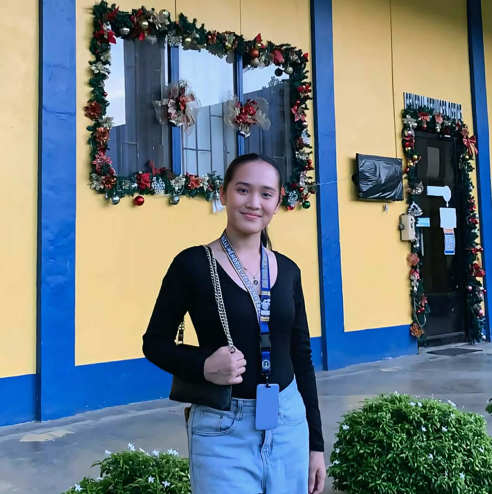
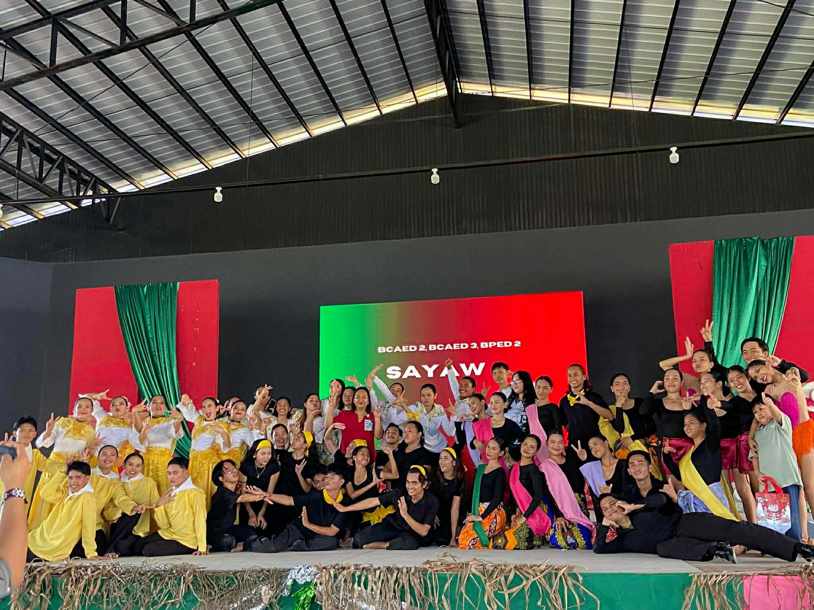
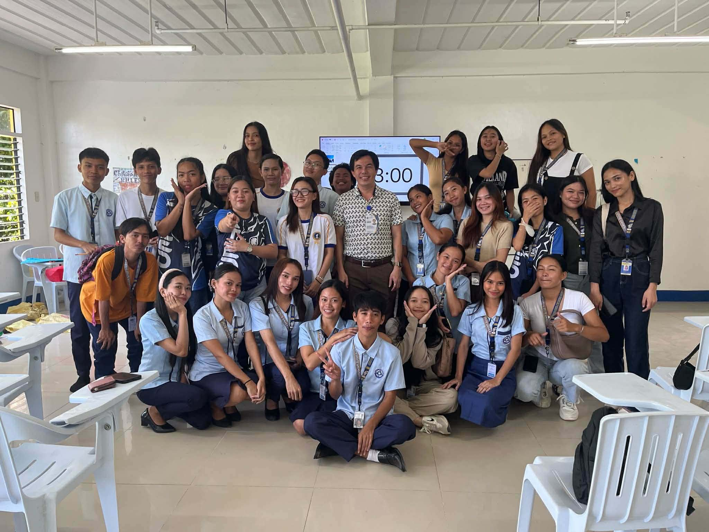
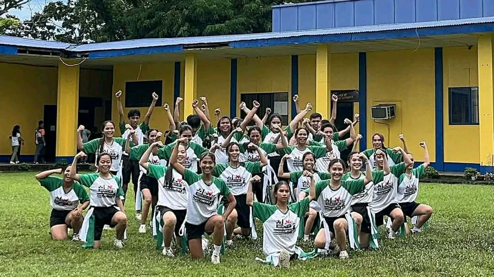
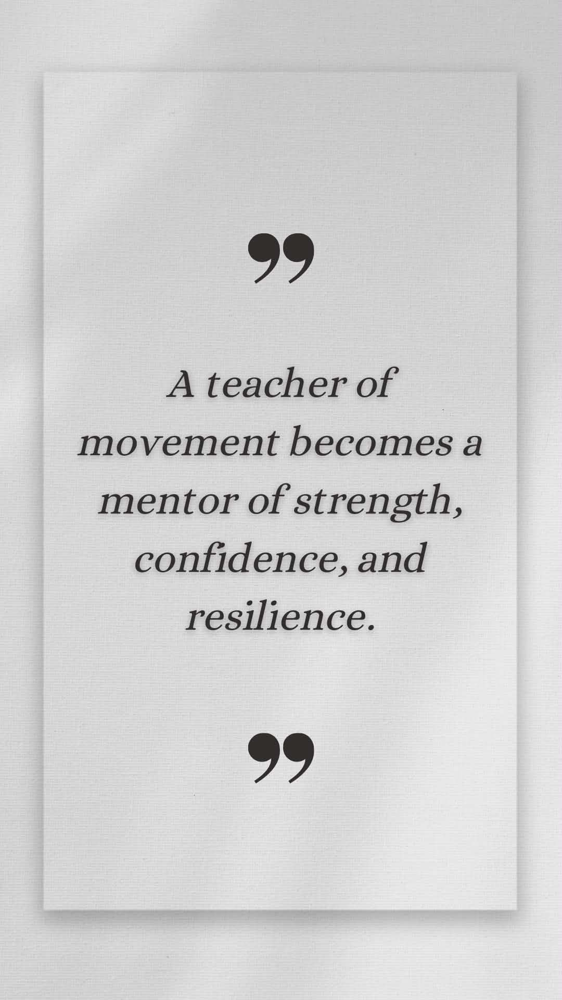
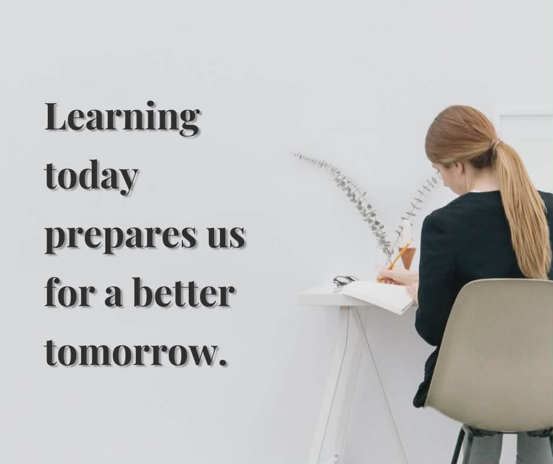

Jessa Paradiang
Bachelor of Physical Education (BPED) Student Passionate about movement, health, and inspiring the next generation.
About me
I move to inspire. I learn to lead. I am currently a Bachelor of Physical Education 2nd year student who is passionate about movement, wellness, and lifelong learning. As I continue my journey in the field of Physical Education, I am developing not only my knowledge and skills but also my values as a future educator and leader. Each lesson, training session, and experience helps shape me into someone who promotes both physical fitness and character development. As a student, I believe that learning is an active and continuous process. Physical Education is not only about sports and physical activities it is about discipline, teamwork, perseverance, and building a healthy lifestyle. I strive to give my best in every activity, whether inside the classroom, on the field, or in community engagement. Through dedication and hard work, I aim to grow into a competent and compassionate future teacher.My approach to learning is participative and growth oriented. I believe that everyone has the potential to improve with the right mindset and consistent effort. As a BPED student, I valued collaboration, respect, and sportsmanship. I am committed to developing my skills in teaching strategies, dance, sports, fitness training, and classroom management so that I can effectively guide my future students. I see myself not just as a learner, but as a future mentor who will inspire others to value health, movement, and holistic development. I want to become an educator who motivates students to discover their strengths, overcome challenges, and build confidence through physical activity. There is nothing more fulfilling than seeing progress—whether it is mastering a new skill, improving endurance, or gaining confidence. My goal is to continue learning, improving, and preparing myself to make a positive impact in the lives of my future students. Education is not just about learning facts, but about shaping lives and building strong foundations for the future.As you explore my journey as a BPED student, I hope you see not only my academic growth but also my passion for becoming a futureready Physical Education teacher who inspires through movement and leads with heart.


Group activities building teamwork

Developing skills and confidence

Guiding students toward growth
Mission
My mission as a future Physical Education teacher is to guide and inspire students to develop a healthy lifestyle, discipline, teamwork, and confidence through physical activities, sports, and dance. I aim to create a positive and supportive learning environment where every student can grow physically, mentally, and socially.
My philosophy in teaching
I believe that teaching is not only about delivering knowledge but about inspiring growth, confidence, and lifelong learning. As a future BPED teacher, I believe that every student has the potential to succeed when given encouragement, guidance, and a positive environment.Physical Education is more than movementit teaches discipline, teamwork, respect, and perseverance. My role as a teacher is to create a safe, inclusive, and motivating space where students can develop not only their physical skills but also their character.I believe that through passion, patience, and purpose, I can help shape students into healthy, confident, and responsible individuals ready to face life's challenges.

Inclusive group movement builds teamwork and joy

Developing confidence through skill mastery